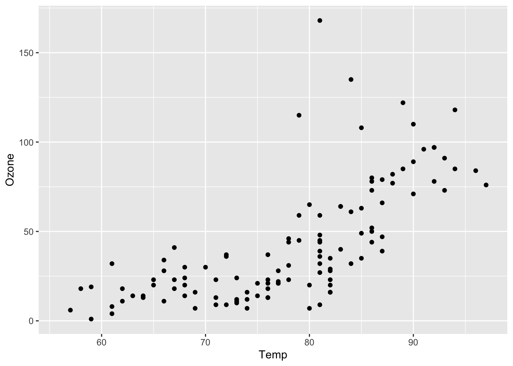
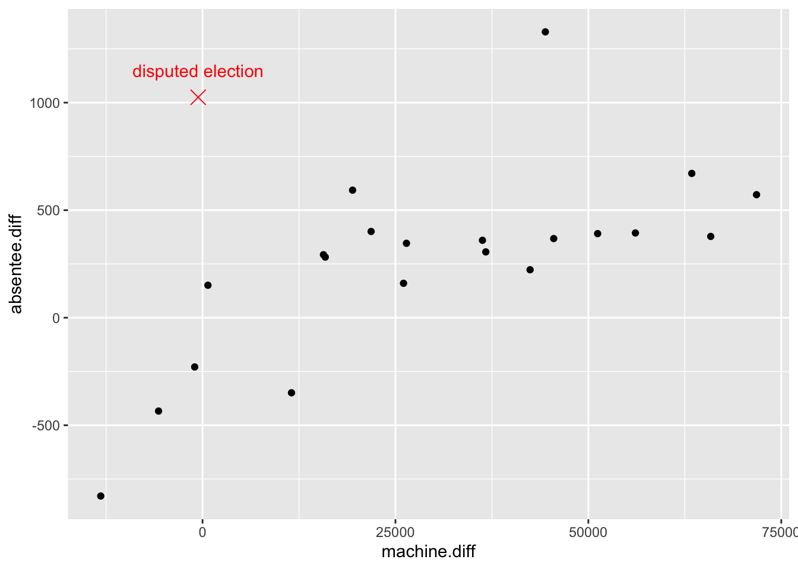

Chapter 6 Introducing linear models
In this part of the module, we will study how to use statistical models to learn about relationships between different variables, using a class of models known as linear models.
The aim here is to teach you practical skills in linear modelling, so that you can fit linear models for a variety of different types of datasets, interpret the results, and make predictions. However, there are some important topics such as hypothesis testing and model checking that we will not cover here, but are taught on the MSc.
6.1 Example: relationship between temperature and ozone
The data set airquality (one of R’s built-in data sets) includes daily readings of temperature (degrees F) and ozone concentration (parts per billion), taken in New York4. For more details, use the command
?airqualitySome rows from the data set and a plot are shown below. Note that some rows have missing values - we will ignore these.
head(airquality)## Ozone Solar.R Wind Temp Month Day
## 1 41 190 7.4 67 5 1
## 2 36 118 8.0 72 5 2
## 3 12 149 12.6 74 5 3
## 4 18 313 11.5 62 5 4
## 5 NA NA 14.3 56 5 5
## 6 28 NA 14.9 66 5 6ggplot(airquality, aes(x = Temp, y = Ozone))+
geom_point()
In the data, we see that we some observations have identical (recorded) temperature values, but different ozone values Hence given the temperature, we are not able to say with certainty what the ozone concentration will be.
For observation \(i\) let \(x_i\) denote the recorded temperature and \(y_i\) denote the corresponding ozone concentration. If we think of \(y_i\) as the observed value of a random variable \(Y_i\), we can then consider a statistical model of the form \[ Y_i=f(x_i) + \varepsilon_i. \] We typically choose \(f\) to be some fairly simple function of \(x\) such as \(f(x)=\beta_0 +\beta_1 x\) or \(f(x)=\beta_0+\beta_1 x+\beta_2 x^2\). The term \(\varepsilon_i\) is a random “error.” Two reasons why an error term would be necessary are as follows.
The variable \(x_i\) is not sufficient for predicting \(Y_i\) with certainty. The variable \(Y_i\) may also depend on other variables which are unknown to us, or there may simply be variation in the population that we are not able to explain with the function \(f\).
We are not able to observe the quantity we are interested in (e.g. ozone concentration) with absolute precision. We observe instead the sum of the true value and a random ‘measurement error’ \(\varepsilon_i\).
We further assume that \(\varepsilon_1,\ldots,\varepsilon_n\) are i.i.d (independent and identically distributed) with some probability distribution, so that in our model, two observations with the same temperature may have different ozone concentrations.
6.2 Notation and terminology
Continuing the example, suppose we choose \(f(x)=\beta_0 + \beta_1 x\), so that we have \[\begin{equation} Y_i=\beta_0+\beta_1 x_i +\varepsilon_i \end{equation}\] We call the \(x\)-variable (temperature) the independent or regressor variable. We will always treat the independent variable as a known constant. (In the example, one could think of the temperature, or at least recorded with some error. Nevertheless, in this modelling framework, the temperatures are treated as known, fixed values.)
The \(Y\)-variable (ozone concentration) is called the dependent variable.
The dependent variable is treated as a random variable, as it is expressed as a function of the independent variable plus a random error term.
The dependent variable will always be a scalar, but we will sometimes consider vector independent variables (e.g. temperature and wind speed). We write \(\mathbf{x}\) to denote a vector independent variable.
Throughout this course we will always make the same assumption that \(\varepsilon_i \sim N(0,\sigma^2)\), with \(\varepsilon_1,\varepsilon_2,\ldots\) independent. We will need to check this assumption, in particular, that each error has the same variance.
The parameters in this model are \(\beta_0, \beta_1\) and \(\sigma^2\). These model parameters are treated as unknown constants. Note that since \(\beta_0\) and \(\beta_1\) are unknown, given \(x_i\) and \(y_i\) we will still not know the true value of \(\varepsilon_i\).
6.3 Example: suspected electoral fraud
In 1993 the election for Pennsylvania’s Second State Senatorial District, Philadelphia, was contested between Republican Marks and Democrat Stinson. Marks received many more machine votes (votes cast in polling booths), but Stinson received many more absentee ballot votes (postal votes), narrowly edging a victory as a result. There were suspicions about the authenticity of many of the absentee ballots, however, and the case ended up in court.
The expert witness
hired by the judge considered the records of twenty-one previous
elections in Philadelphia’s senatorial districts, and looked at the
relationship between the difference in machine ballot votes and
difference in absentee ballot votes between Democrat and Republican
candidates. In the 1993 election, the difference in machine ballot
votes (Democrat - Republican) was -564 votes. The difference in
absentee ballot votes (Democrat - Republican) was 1025 votes. The
data are in the file election.csv, and are plotted below.
election <- read_csv("election.csv")
head(election)## # A tibble: 6 × 2
## absentee.diff machine.diff
## <dbl> <dbl>
## 1 346 26427
## 2 282 15904
## 3 223 42448
## 4 593 19444
## 5 572 71797
## 6 -229 -1017ggplot(election, aes(x = machine.diff, y = absentee.diff)) +
geom_point() +
annotate("point", x = -564, y = 1025, col = "red",
pch = 4, size = 4) +
annotate("text", x = -564, y = 1150, col = "red",
label = "disputed election")
The scatter plot shows a clear relationship between difference in machine votes and difference in absentee votes. Additionally, the result in question is not consistent with the rest (i.e. it is an outlier). However, we see that there is a second (presumably undisputed) election result (44425,1329) that also appears to be outlying. Do these data really suggest fraud? Is it plausible that the observation (-564,1025) is simply due to chance? How can linear modelling be used to investigate this?
6.4 Definition of a linear model
One may imagine that a linear model means a ‘straight line’ (linear) relationship between the independent variable \(x\) and dependent variable \(y\)", but that is actually not the definition.
A linear model is defined to be any model in which the expected value of the dependent variable \(E(Y_i)\) is expressed as a linear combination of the parameters
The following is an example of a linear model: \[ E(Y_i)=\beta_0+\beta_1 x_i. \]
Is the model \[ E(Y_i)=\beta_0+\beta_1 x_i+ \beta_2 x_i^2 \] a linear model? Yes, because \(E(Y_i)\) is a linear function of the parameters (\(\beta_0,\beta_1\) and \(\beta_2\) in this case). The fact that \(E(Y_i)\) is not a linear function of the independent variable \(x_i\) is not important.
The model \[\begin{equation} E(Y_i)=\beta_0+\beta_1 x + e^{\beta_2 x_i}, \end{equation}\] is not a linear model, because \(E(Y_i)\) is not a linear function of the parameter \(\beta_2\).
Typically, linear models are sufficient when the dependent variable is a continuous quantity, and so are useful in a wide variety of contexts. Linear models are not suitable when the dependent variable is categorical or ordinal. (This requires the use of generalised linear models, which are taught on the MSc).
The independent variable does not have to be continuous, and we can
have more than one independent variable. Continuing the air quality example, suppose we want to include Wind speed, and suppose we also know whether it was overcast at the time of measuring the variables. We could extend the model and write
\[\begin{equation}
Y_i=\beta_0+ \beta_1 x_i + \beta_2 w_i + \beta_3 z_i +\varepsilon_i,
\end{equation}\]
where \(w_i\) is the wind speed for the \(i\)th measurement, and
\(z_i\) is a dummy variable representing cloud conditions:
\[
z_i=\left\{\begin{array}{cl} 0 & \mbox{overcast conditions for measurement $i$}\\
1 & \mbox{not overcast conditions}
\end{array}\right.
\]
Example 6.1 (Writing down a linear model.)
Two objects \(A\) and \(B\) are to be weighed. Each measurement is subject to a measurement error, with the measurement errors assumed to be independent \(N(0,\sigma^2)\) random variables. Objects \(A\) and \(B\) are weighed separately, and then together, so that there are three measurements in total. Write down a linear model that relates the measurements to the true weights. You may use more than one equation to do this.
Solution
Let \(\theta_A\) and \(\theta_B\) denote the true weights of the two objects, and \(Y_1,Y_2,Y_3\) be the measurements. We have
\[\begin{align*} Y_1 &= \theta_A + \varepsilon_1,\\ Y_2 &= \theta_B + \varepsilon_2,\\ Y_3 &= \theta_A + \theta_B + \varepsilon_3, \end{align*}\] with \(\varepsilon_1,\varepsilon_2,\varepsilon_3\stackrel{i.i.d}{\sim}N(0,\sigma^2)\). This is a linear model because \(E(Y_i)\) is a linear combination of \(\theta_A\) and \(\theta_B\) for each \(i\).
6.5 The simple linear regression model
We call the model
\[ Y_i=\beta_0+\beta_1 x_i +\varepsilon_i, \] for \(i=1,\ldots n\) with \(\varepsilon_1,\ldots,\varepsilon_n \stackrel{i.i.d.}{\sim} N(0,\sigma^2)\) the simple linear regression model. For obvious reasons, we refer to \(\beta_0\) as the intercept parameter and \(\beta_1\) as the gradient or slope parameter.
What is the distribution of \(Y_i\) for this model? Recall that for a random variable \(Z\) and constants \(a\) and \(b\): \[\begin{eqnarray*} E(aZ+b)&=&aE(Z) +b,\\ Var(aZ+b)&=&a^2Var(Z). \end{eqnarray*}\]
Also, if \(Z\sim N(\mu,\sigma^2)\) then \(aZ+b \sim N(a\mu+b,a^2\sigma^2)\). Now, if \(\varepsilon_i\sim N(0,\sigma^2)\) and \(\beta_0,\beta_1\) and \(x_i\) are constants then we have \[\begin{eqnarray} E(Y_i)&=& \beta_0 + \beta_1 x_i,\\ Var(Y_i)&=& \sigma^2, \end{eqnarray}\] and \[\begin{equation} Y_i \sim N(\beta_0 + \beta_1 x_i, \sigma^2). \end{equation}\] Additionally, since \(\varepsilon_1,\ldots,\varepsilon_n\) are independent, it follows that \(Y_1,\ldots,Y_n\) are independent.
Note that we do not need to consider the case \(E(\varepsilon_i)\neq 0\). Suppose we have a model \[\begin{equation} Y_i = \gamma + \beta_1 x_i +\delta_i, \end{equation}\] with \(\delta_i \sim N(\mu,\sigma^2)\) and \(\mu \neq 0\). We can write \[\begin{equation} \delta_i = \mu + \varepsilon_i, \end{equation}\] with \(\varepsilon_i \sim N(0,\sigma^2)\) so that we can re-write this model as \[\begin{equation} y_i = \mu+ \gamma + \beta_1 x_i +\varepsilon_i. \end{equation}\] If we now set \(\beta_0 = \mu + \gamma\), we see that this model is indistinguishable from the simple linear regression model. To put it another way, as we can write \(Y_i = E(Y_i) + \varepsilon_i\), we must have \(E(\varepsilon_i) = 0\).
The data were obtained from the New York State Department of Conservation (ozone data) and the National Weather Service (meteorological data)↩︎